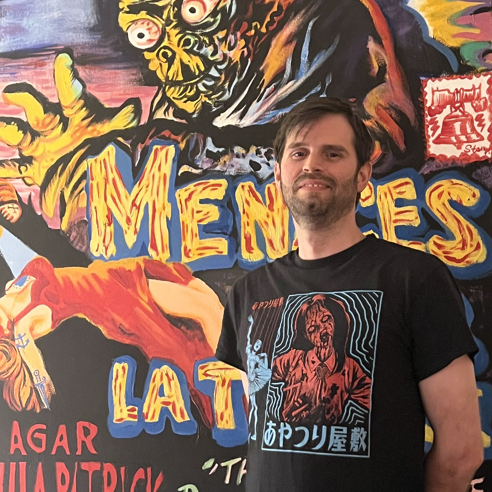

Alex Nava
Software Engineer | .NET Developer | Azure DevOps C# | C | Java | JavaScript | Python | SQL
Projects
Adventure Game
"Adventure Game" is a 2D side-scrolling fantasy/sci-fi action-adventure RPG with platforming elements. Set in an isolated fantasy world with a buried technological past, a young guard stumbles upon an ancient existential threat facing their world. Explore several large overworld map areas with lots of nooks and crannies, many rich levels full of secrets and lively towns with interesting NPCs. Find weapons, abilities and power-ups throughout your journey, face off against challenging enemies and bosses, and uncover the secrets and lore of this mysterious and ancient world.
"Adventure Game" was originally conceieved of by my friend Ryan Elmore, who handles most of the creative aspects, while I focus on technical development and project management. You can check out the state of the project below. It is (somewhat) playable in its current state on Itch.io, and also available to view as a Github repo of the Unity Project.

Galaxy Stone
Currently on hiatus. Originally conceived of by my friend Ben Hance. Galaxy Stone is a turn-based Strategy-RPG set in a strange and alien world about creatures defending their home planet against hostile invaders.
It isn't quite playable in its current state, but it is on Itch.io, and also available as a Github repo of the Unity Project.

True Story
This is where it all began for me. 'True Story' was the first project I started working on when I first decided I wanted to build games. 'True Story' is a love letter to the golden era of 16-bit RPGs. It is a top-down Action-RPG about a boy and his companions who must save the world, set in a wacky Earth-like planet.
I had big dreams for this project, but at the time I didn't really understand how difficult it would be to develop something of this scope on my own and unfortunately I eventually decided to put it on hiatus to work on other projects, which isn't to say that it's never going to happen. I intend to come back to it someday when I can afford the time and perhaps enlist some more help. It isn't very playable in its current state, though it is on Itch.io and also available as a Github repo of the Unity Project.